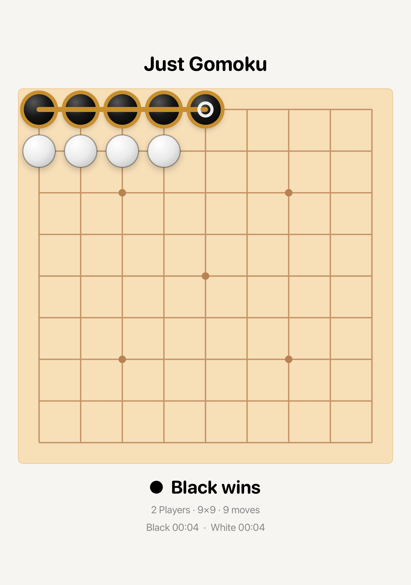
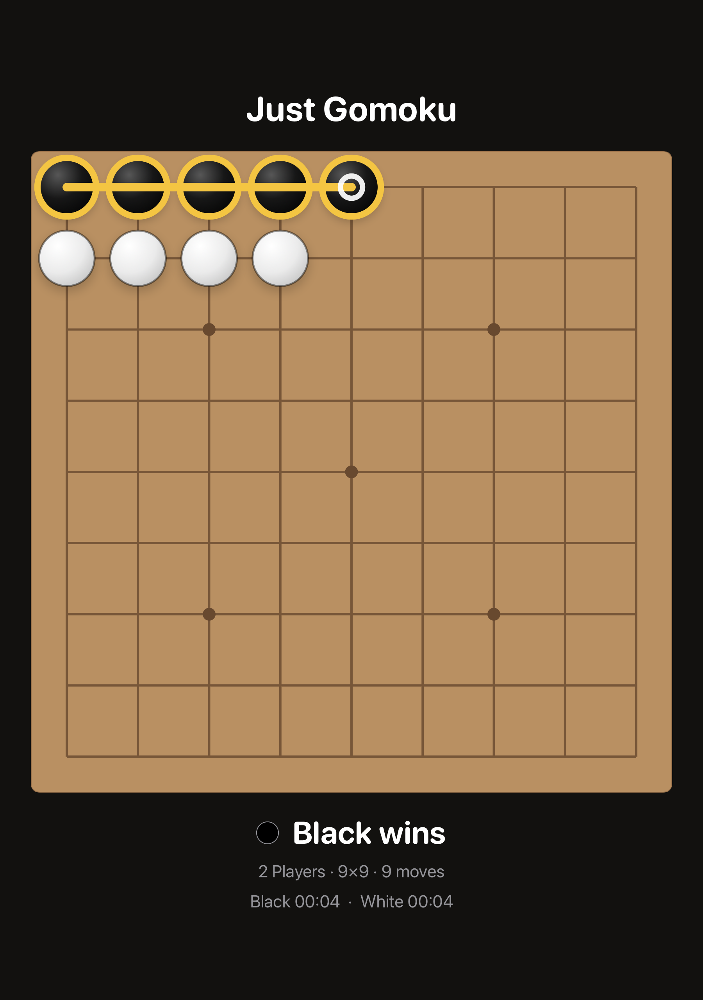

JUST GOMOKU · OCTOBER 11, 2026
Simulator QA
Gameplay, persistence, sharing, and the selected accessibility checks passed. Native board gestures were verified on iOS 18.6 and iOS 27.
The current suite contains 17 distinct UI scenarios and 23 game, hint, and persistence checks. Runs below overlap; this does not mean every scenario was tested on every device. QA used a frozen source snapshot.
Results
| Device / run | Result | Scope | Evidence |
|---|---|---|---|
| iPhone SE · iOS 27.0 | 11 / 11 passed | Initial gameplay, history, replay, sharing, and relaunch edge cases. | Result bundle |
| iPhone 16 Pro · iOS 18.6 | 11 UI scenarios verified | 9 passed initially; the 2 remaining cases passed after correcting the test helper for native stepper accessibility. The rerun also passed all 23 model checks. | Initial · Rerun · Log |
| iPad Pro 13-inch (M5) · iOS 27.0 | 5 / 5 passed | Setup, tap/held-drag gameplay, settings/history navigation, and appearance changes before sharing. | Result · Log |
| iPhone SE · largest accessibility text | 2 / 2 passed | Header and footer layout, scrolling, hit regions, descriptions, and text clipping. | Result · Log |
| iOS 27 · final native board regression | 23 model + 5 core UI passed; 2 audits passed on rerun | Native tap/hold/cancel/swipe, min/max boards, reset/relaunch, sharing, and 23 model regressions passed. Two audit-tool failures were retained; the corrected audit fixtures passed separately. | Core run + diagnostics · Audit rerun · Log |
| iOS 18 · final native board regression | 4 gesture/session UI + 2 audit checks passed | Native gesture/session compatibility passed. The 2 audit fixtures passed after separating fixed-size clipping checks from system Dynamic Type support. | Core run + diagnostics · Audit rerun |
| Build checks | iOS Release + macOS Debug passed | Native gesture bridge compiles for iOS; macOS keeps its SwiftUI gestures. DEBUG fixtures are excluded from Release. | iOS log · macOS log |
Issues found and fixed
- Stale hints: pending hints could appear after a move or win, and visible hints could survive backgrounding. Position checks and cancellation now clear them.
- History search: searching the displayed
15×15size returned no matches. Search now accepts both×and ASCIIx, and trims surrounding whitespace. - Share appearance: a completed game's PNG could keep the old appearance after switching light/dark mode. Rendering now refreshes when appearance changes; exported pixels match each palette.
- Large-text scrolling: combined SwiftUI board gestures blocked scrolling from the board at the largest accessibility size. Native UIKit recognizers now coordinate board touch with scrolling; the move counter moved from y=652 to y=335 after a swipe, and New Game became fully reachable.
- Compact text clipping: vertical sizing and the move counter's accessible description were corrected. Both compact header/footer audits now pass their selected layout checks.
The iOS 18 stepper adjustment and system share-sheet Cell/Button queries were test-harness corrections, not app defects.
Edge-case coverage
| Gameplay | 5×5 and 25×25 limits, corner taps, occupied intersections, held placement, cancelled drags, swipes, undo to an empty board, and cancelling/resetting setup. |
| Session and archive | Active-game process relaunch, supported-size normalization, clock snapshots, valid 25-move draws, terminal move rejection, 250 distinct archives, duplicate replacement, and replay prefixes. Disk-backed tests reopen fresh containers to verify saved win/draw data and durable deletion/erase. |
| History and replay | 40 seeded games, empty archive versus empty filter, unmatched/cleared searches, Unicode/ASCII size queries, start/end bounds, stepping, restart from the final position, continued playback, and paused scrubbing. |
| Sharing and accessibility | Win/draw system previews, result titles and thumbnails, Play Again, appearance-specific PNG pixels, and compact largest-text layout checks. |
Verified share cards




Pixel verification found more than 2.25 million board pixels matching each expected palette and zero pixels matching the opposite board palette.
Remaining limits
- Audit scope: system Dynamic Type support, hit regions, and descriptions; clipping checks at the largest text size. Small-font ViewThatFits clipping findings had no resolvable element. A fixed-size fixture cannot verify support for all system font sizes, so those checks run separately.
- Contrast audit tool limitation: the automatic auditor continued to flag “2 Players” even with opaque black text on a light background. Diagnostics and the log are retained. This report does not certify full contrast compliance.
- iPad coverage is limited to primary flows. Stage Manager and narrow windows were not tested in this run.
- Physical haptics, a full VoiceOver navigation pass, iCloud synchronization, and actual external share delivery need device/account checks.